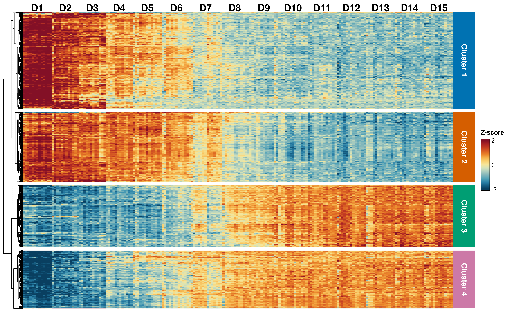
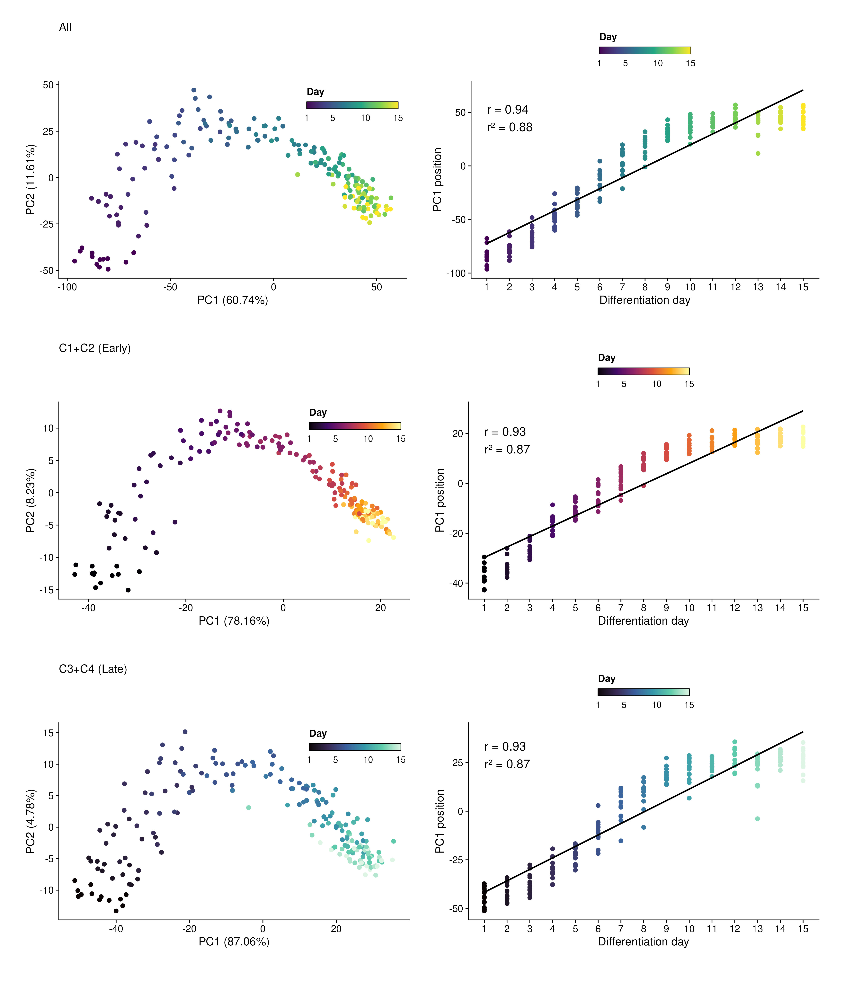
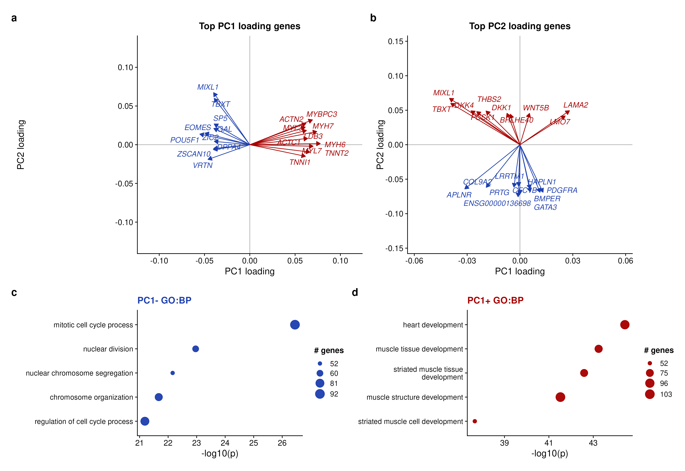
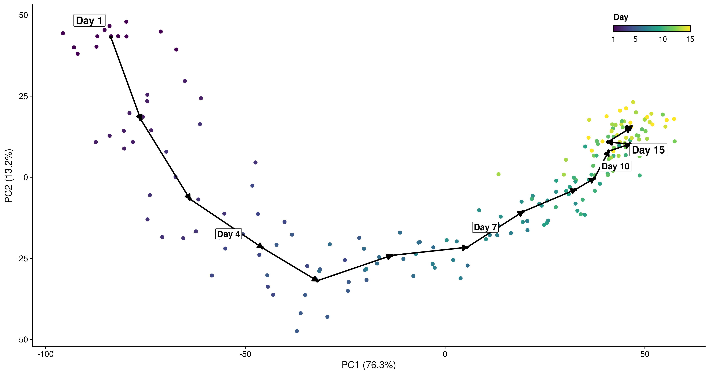
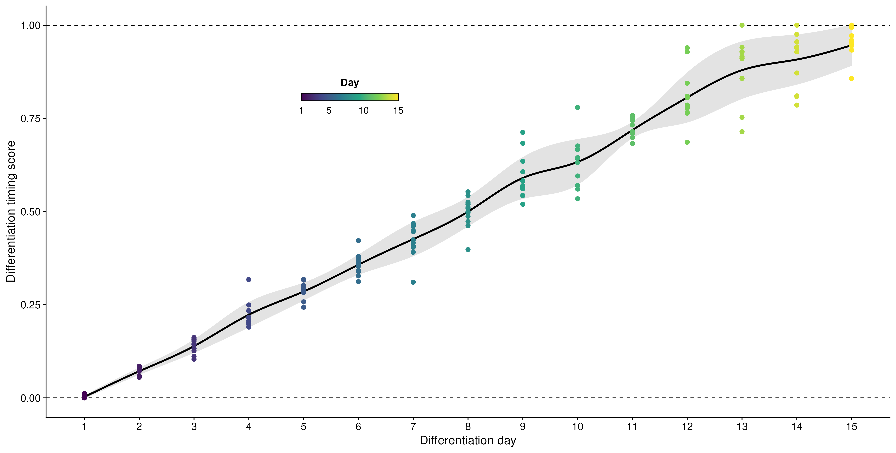
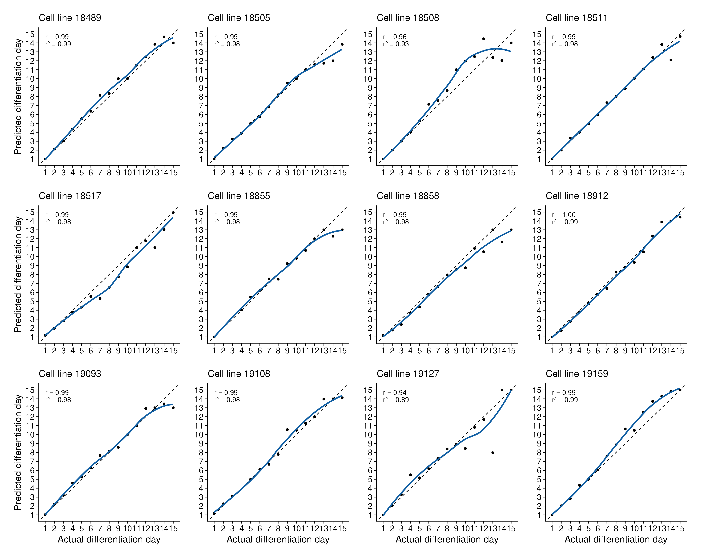
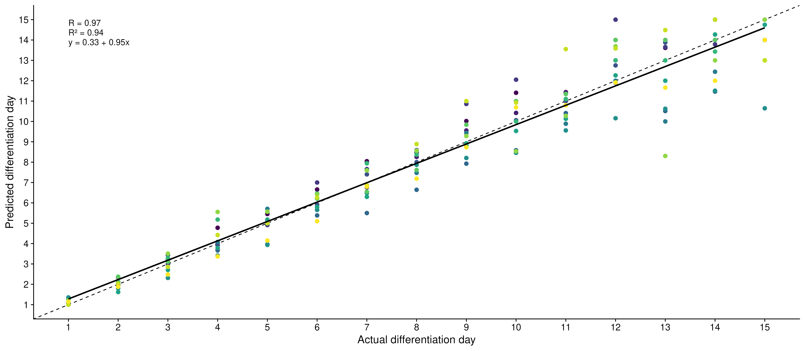
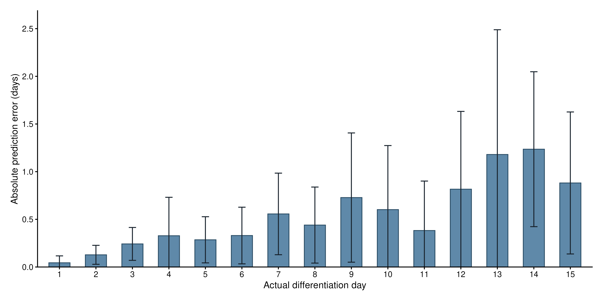

Differentiation timing score
Differentiation timing score
1 Introduction
Bulk RNA-seq differentiation studies are typically sampled at discrete timepoints, even though individual samples may progress through differentiation at different rates. This tutorial develops a reference-trajectory method that uses gene expression to estimate each sample’s continuous position along a known differentiation time course.
The method reports normalized predicted reference time, a differentiation score bounded by the reference endpoints, and squared distance from the fitted trajectory. These are relative to the selected reference; they do not measure cell quality, potency, lineage identity, or absolute biological age.
2 Core idea and what the scorer needs
The scorer assumes that temporal genes and normalized expression values have already been defined. It trains the reference PCA and day-centroid polyline, projects all supplied samples into that fixed space, and returns predicted time, a normalized differentiation score, and projection-distance diagnostics. It does not select genes, normalize counts, draw figures, or write files.
Three inputs carry the biological meaning of the score: normalized genes-by-samples expression; matching sample metadata with ordered reference times; and temporal genes selected independently of the samples being evaluated. An optional reference-sample set defines which samples train the PCA and trajectory. If it is omitted, all supplied samples are treated as reference samples. The scorer automatically retains the smallest number of PCs explaining at least 99% of between-timepoint variance.
base_url <- paste0(
'https://raw.githubusercontent.com/ZohebKhan1/',
'pca-maturation-scoring/main/functions'
)
download.file(
paste0(base_url, '/score_differentiation_timing.R'),
'score_differentiation_timing.R'
)
source('score_differentiation_timing.R')The output contains sample-level scores and the fitted PCA, centroid polyline, and variance information needed to inspect the reference model. Because projection is clipped to finite centroid-to-centroid segments, predicted times and normalized scores are bounded by the first and last reference timepoints.
-
Select temporal genesApply expression, time-effect, and VST-range filters within the reference samples.
-
Train the reference PCAFit centered, unscaled PCA to the mean temporal-gene profile at each reference timepoint.
-
Construct the time trajectoryConnect the ordered reference-timepoint centroids with finite line segments.
-
Project samplesReturn predicted time, normalized score, and distance from the reference trajectory.
3 Case-study data and scope
The worked example uses processed data derived from public NCBI GEO accession GSE122380, a bulk RNA-seq time course of human induced pluripotent stem cell differentiation into cardiomyocytes reported by Strober, Elorbany, Rhodes and colleagues. The analysis includes 192 samples from 13 cell lines collected across differentiation days 1 through 15. These samples form the reference cohort used for temporal-gene selection, PCA training, day-centroid trajectory fitting, and internal validation.
The repository bundles aligned sample metadata, a raw gene-count matrix, and a variance-stabilized expression matrix. The active input contains no perturbation samples. These tracked RDS files are the reproducible starting point for the workflow; raw-read acquisition, sequencing and sample-level QC, alignment, quantification, upstream gene filtering, and construction of the VST matrix are outside the repository’s scope. The tutorial therefore reproduces the analysis from processed inputs rather than from FASTQ files.
| Metric | D1 | D2 | D3 | D4 | D5 | D6 | D7 | D8 | D9 | D10 | D11 | D12 | D13 | D14 | D15 |
|---|---|---|---|---|---|---|---|---|---|---|---|---|---|---|---|
| Samples | 13 | 12 | 12 | 12 | 13 | 13 | 13 | 13 | 13 | 13 | 13 | 13 | 13 | 13 | 13 |
| Cell lines | 13 | 12 | 12 | 12 | 13 | 13 | 13 | 13 | 13 | 13 | 13 | 13 | 13 | 13 | 13 |
The overview below shows global time-course structure and the corresponding day-collapsed expression similarity.

The broad day ordering in both views motivates learning a reference trajectory before assigning continuous timing to individual samples.
4 Scoring workflow
4.1 Select temporal genes
Temporal-gene selection applies three filters in sequence. A gene is retained only if it satisfies every criterion.
The DESeq2 likelihood-ratio test asks whether categorical time improves the count
model after adjustment for the metadata columns selected by the user, such as
batch, donor, sex, or another known nuisance variable. The full model includes
those covariates and categorical time; the reduced model includes the same
covariates without time. With no adjustment covariates, the reduced model is
~ 1.
DESeq2 calculates \(\mathrm{LR}=2(\ell_{\mathrm{full}}-\ell_{\mathrm{reduced}})\), where \(\ell\) is the maximized model log likelihood. A small adjusted \(p\)-value therefore indicates that categorical time improves fit after accounting for the selected covariates; the test does not assume a linear expression trend.
source('functions/get_temporal_genes.R')
temporal_selection <- get_temporal_genes(
raw_counts = counts,
vst_expression = vst,
metadata = metadata,
sample_id_col = 'sample_id',
time_col = 'day_numeric',
adjustment_covariates = 'cell_line' # GSE122380-specific
)
temporal_genes <- temporal_selection$temporal_genesFor this case study, genes pass when maximum day-mean TMM CPM is at least 10,
the LRT adjusted \(p\)-value is below \(10^{-7}\), and the day-mean VST range is
at least 0.6. These are the documented GSE122380 choices, not universal
cutoffs. The example adjusts for cell_line; another study should choose the
metadata covariates that represent its own design, such as batch or donor.
To select temporal genes from one reference cohort, provide a metadata column and value together. For example,
restricts CPM filtering, the LRT, and VST-range filtering to samples labeled
control in metadata$condition. Omitting both arguments uses all samples.
This pair controls which samples enter gene selection; it is not a DESeq2
coefficient reference level, which does not affect this omnibus LRT.
| Metric | Value |
|---|---|
| Genes in the aligned count/VST input | 13,615 |
| Genes with maximum day-mean TMM CPM >= 10 | 11,411 |
| Genes passing LRT adjusted p-value < 1e-7 | 10,863 |
| Genes passing all filters and used for scoring | 8,215 |
The heatmap displays the first 1,500 final temporal genes after ordering the LRT results by adjusted p-value and then raw p-value. PCA, scoring, and validation use the complete temporal set rather than this display subset.

The display shows coordinated temporal structure across the selected genes; the full temporal set, rather than this display subset, is used for PCA and scoring.
The four-cluster partition uses Ward-D2 hierarchical clustering of Euclidean distances between robust-LOESS-smoothed, re-standardized day-mean profiles. It is used only to interpret broad expression patterns. Cluster trajectories and GO Biological Process enrichment use the same 1,500 displayed genes, with those genes as the enrichment universe. These tests are not part of the scoring algorithm.

The clusters provide interpretable summaries of expression patterns, while the scoring model continues to use the complete temporal-gene set.
4.2 Train the PCA reference space
Let \(X \in \mathbb{R}^{n \times p}\) be normalized reference expression for \(n\) samples and \(p\) temporal genes. For each of \(m\) reference timepoints, the scorer first calculates its mean expression profile \(\mathbf{m}_j\). PCA is fitted to the \(m \times p\) matrix of timepoint means after centering each gene without variance scaling. If \(\boldsymbol{\mu}_M\) is the across-timepoint gene mean and \(W_k\) contains the retained loading vectors, then
\[ \mathbf{m}_j = \frac{1}{|I_j|}\sum_{i \in I_j}\mathbf{x}_i, \qquad \mathbf{z}_i = (\mathbf{x}_i - \boldsymbol{\mu}_M) W_k. \tag{1} \]
The reference fit retained seven PCs in the complete cohort and in every validation fold. PC1 is flipped for figure readability when needed so it increases with differentiation day; a sign flip does not alter Euclidean projections or scores.

The separation of reference days is visible in the retained PCA space; the cluster-specific panels are descriptive views of the same reference structure.
The loading analysis annotates the largest PC1 and PC2 loadings and tests the top 500 genes in each PC1 direction for GO enrichment against the full temporal-gene universe.

These loadings help interpret the reference axes, but they do not replace the trajectory-based timing estimate.
4.3 Fit and score the day-centroid polyline
For each ordered reference day \(t_j\), the mean PCA coordinate is
\[ \mathbf{c}_j = \frac{1}{|I_j|}\sum_{i \in I_j}\mathbf{z}_i, \qquad j = 1,\ldots,m. \tag{2} \]
The ordered centroids define a piecewise-linear trajectory. PC1 alone is only one projection of this space; the temporal path can curve across several retained PCs. Connecting ordered centroids and projecting to the nearest finite segment therefore preserves that multidimensional path. Segment \(j\) begins at \(\mathbf{a}_j=\mathbf{c}_j\), ends at \(\mathbf{b}_j=\mathbf{c}_{j+1}\), and has direction \(\mathbf{v}_j=\mathbf{b}_j-\mathbf{a}_j\). For sample \(i\), the fraction along segment \(j\) is
\[ \alpha_{ij} = \operatorname{clip}_{[0,1]} \left( \frac{\langle \mathbf{z}_i-\mathbf{a}_j,\mathbf{v}_j \rangle} {\langle \mathbf{v}_j,\mathbf{v}_j \rangle} \right). \tag{3} \]
The closest finite-segment projection is selected:
\[ \mathbf{q}_{ij}=\mathbf{a}_j+\alpha_{ij}\mathbf{v}_j, \qquad j^\ast=\underset{j}{\operatorname{argmin}} \left\lVert\mathbf{z}_i-\mathbf{q}_{ij}\right\rVert^2. \tag{4} \]
The corresponding predicted time and normalized score are
\[ \widehat{t}_i=t_{j^\ast}+\alpha_{ij^\ast}(t_{j^\ast+1}-t_{j^\ast}), \qquad s_i=\frac{\widehat{t}_i-t_{\mathrm{start}}}{t_{\mathrm{end}}-t_{\mathrm{start}}}. \tag{5} \]
Zero-length centroid segments are omitted. The method assumes that ordered centroids describe a meaningful trajectory in retained PC space. A self-approaching or folded trajectory can make nearest-segment assignments biologically ambiguous; squared projection distance should therefore be inspected when adapting the scorer.
source('functions/score_differentiation_timing.R')
timing_fit <- score_differentiation_timing(
expression_matrix = vst,
metadata = metadata,
temporal_genes = temporal_genes,
sample_id_col = 'sample_id',
time_col = 'day_numeric'
)
head(timing_fit$scores)
The ordered centroids form the reference path used for interpolation, rather than a single-axis ranking.
The next figure projects the reference samples back onto their fitted trajectory. This is a descriptive calibration view, not out-of-sample validation. The gray band is the day-level mean score plus or minus one standard deviation.

This calibration view shows how the bounded score distributes across observed reference days; it does not test transfer to new samples.
5 Internal cell-line cross-validation
Leave-one-cell-line-out validation repeats temporal-gene selection, PCA training, and polyline fitting using the remaining cell lines, then scores samples from the held-out cell line. The count-based DESeq2 LRT is refit in each fold. The tracked VST matrix is shared across folds because the upstream transformation pipeline is not available; the result is therefore internal validation conditional on this processed cohort, not an external transferability estimate.
Fold-specific temporal genes are also divided into maturation and progenitor sets by the sign of their Spearman correlation with day. The reported accuracy metrics use the complete temporal set. All 13 held-out cell lines contribute; cell line 19190 is omitted only from the per-cell-line panel grid so the display remains a balanced 3-by-4 layout.
| Metric | Value |
|---|---|
| Held-out cell lines | 13 |
| Held-out samples | 192 |
| Correlation between actual and predicted day | 0.979 |
| Squared Pearson correlation | 0.959 |
| Mean absolute error | 0.55 days |
| Median absolute error | 0.30 days |
| Predictions within 1 day | 82.3% |
| Predictions within 2 days | 97.9% |
In this cohort, held-out predictions correlate 0.979 with observed days, with a median absolute error of 0.30 days and 82.3% within one day. These results support internal calibration of the documented cohort, not a universal accuracy claim.

The panels show that agreement is not identical across cell lines, so performance should be reviewed at the level of the intended reference population.

The overall association summarizes internal prediction behavior, while deviations from the identity line show the remaining timing error.
For held-out sample \(i\), absolute prediction error is
\[ e_i=\left|\widehat{t}_i-t_i\right|. \]
Bars show the mean absolute held-out prediction error at each observed day. Error bars show one standard deviation across held-out samples at that day.

The day-specific error bars show where precision varies across the reference course; this variation is part of the model diagnostic.
6 Interpretation and adaptation
The score is normalized predicted reference time along the fitted trajectory. It is not path length, a cell-quality measure, a potency or lineage-identity score, or an estimate of absolute biological age.
Squared projection distance is a model-relative diagnostic: it reports how far a sample lies from its nearest fitted trajectory segment in the retained PCA space. There is no universal cutoff; inspect its distribution and biological context before deciding whether a sample is poorly represented by the reference.
For a new study, select temporal genes and train the PCA/polyline model in an appropriate reference cohort, then project test samples without refitting that model. Before comparing scores across datasets, verify gene identifiers, normalization, shared feature support, batch structure, reference-time coverage, and projection distance.
7 References
- Love MI, Huber W, Anders S. Moderated estimation of fold change and dispersion for RNA-seq data with DESeq2. Genome Biology. 2014;15:550.
- Strober BJ, Elorbany R, Rhodes K, et al. Dynamic genetic regulation of gene expression during cellular differentiation. Science. 2019;364:1287-1290.
8 Session information
## R version 4.6.1 (2026-06-24)
## Platform: aarch64-apple-darwin23
## Running under: macOS Tahoe 26.5.1
## Matrix products: default
## BLAS: /Library/Frameworks/R.framework/Versions/4.6/Resources/lib/libRblas.0.dylib
## LAPACK: /Library/Frameworks/R.framework/Versions/4.6/Resources/lib/libRlapack.dylib; LAPACK version 3.12.1
## locale:
## [1] C.UTF-8/C.UTF-8/C.UTF-8/C/C.UTF-8/C.UTF-8
## time zone: America/Chicago
## tzcode source: internal
## attached base packages:
## [1] grid stats4 stats graphics grDevices utils datasets
## [8] methods base
## other attached packages:
## [1] viridis_0.6.5 viridisLite_0.4.3
## [3] systemfonts_1.3.2 scales_1.4.0
## [5] ragg_1.5.2 patchwork_1.3.2
## [7] org.Hs.eg.db_3.23.1 ggrepel_0.9.8
## [9] ggplot2_4.0.3 edgeR_4.10.1
## [11] limma_3.68.4 DESeq2_1.52.0
## [13] SummarizedExperiment_1.42.0 MatrixGenerics_1.24.0
## [15] matrixStats_1.5.0 GenomicRanges_1.64.0
## [17] Seqinfo_1.2.0 ComplexHeatmap_2.28.0
## [19] clusterProfiler_4.20.0 circlize_0.4.18
## [21] AnnotationDbi_1.74.0 IRanges_2.46.0
## [23] S4Vectors_0.50.1 Biobase_2.72.0
## [25] BiocGenerics_0.58.1 generics_0.1.4
## [27] bookdown_0.47
## loaded via a namespace (and not attached):
## [1] RColorBrewer_1.1-3 rstudioapi_0.19.0 jsonlite_2.0.0
## [4] shape_1.4.6.1 tidydr_0.0.6 magrittr_2.0.5
## [7] magick_2.9.1 ggtangle_0.1.2 rmarkdown_2.31
## [10] farver_2.1.2 GlobalOptions_0.1.4 fs_2.1.0
## [13] vctrs_0.7.3 Cairo_1.7-0 memoise_2.0.1
## [16] ggtree_4.2.0 htmltools_0.5.9 S4Arrays_1.12.0
## [19] SparseArray_1.12.2 gridGraphics_0.5-1 sass_0.4.10
## [22] bslib_0.11.0 htmlwidgets_1.6.4 plyr_1.8.9
## [25] httr2_1.3.0 cachem_1.1.0 igraph_2.3.3
## [28] lifecycle_1.0.5 iterators_1.0.14 pkgconfig_2.0.3
## [31] Matrix_1.7-5 R6_2.6.1 fastmap_1.2.0
## [34] gson_0.2.0 clue_0.3-68 digest_0.6.39
## [37] aplot_0.3.1 enrichplot_1.32.0 colorspace_2.1-3
## [40] ggnewscale_0.5.2 aisdk_1.4.12 textshaping_1.0.5
## [43] RSQLite_3.53.3 labeling_0.4.3 mgcv_1.9-4
## [46] abind_1.4-8 httr_1.4.8 polyclip_1.10-7
## [49] compiler_4.6.1 bit64_4.8.2 fontquiver_0.2.1
## [52] withr_3.0.3 doParallel_1.0.17 S7_0.2.2
## [55] BiocParallel_1.46.0 DBI_1.3.0 ggforce_0.5.0
## [58] R.utils_2.13.0 MASS_7.3-65 DelayedArray_0.38.2
## [61] rappdirs_0.3.4 rjson_0.2.23 tools_4.6.1
## [64] otel_0.2.0 ape_5.8-1 scatterpie_0.2.6
## [67] R.oo_1.27.1 glue_1.8.1 callr_3.8.0
## [70] nlme_3.1-169 R.cache_0.17.0 GOSemSim_2.38.3
## [73] cluster_2.1.8.2 reshape2_1.4.5 gtable_0.3.6
## [76] R.methodsS3_1.8.2 tidyr_1.3.2 XVector_0.52.0
## [79] foreach_1.5.2 pillar_1.11.1 stringr_1.6.0
## [82] yulab.utils_0.2.4 splines_4.6.1 dplyr_1.2.1
## [85] tweenr_2.0.3 treeio_1.36.1 lattice_0.22-9
## [88] bit_4.6.0 tidyselect_1.2.1 locfit_1.5-9.12
## [91] fontLiberation_0.1.0 GO.db_3.23.1 Biostrings_2.80.1
## [94] knitr_1.51 gridExtra_2.3.1 fontBitstreamVera_0.1.1
## [97] xfun_0.60 statmod_1.5.2 stringi_1.8.7
## [100] lazyeval_0.2.3 ggfun_0.2.1 yaml_2.3.12
## [103] evaluate_1.0.5 codetools_0.2-20 gdtools_0.5.1
## [106] tibble_3.3.1 qvalue_2.44.0 BiocManager_1.30.27
## [109] ggplotify_0.1.3 cli_3.6.6 jquerylib_0.1.4
## [112] processx_3.9.0 styler_1.11.0 dichromat_2.0-0.1
## [115] Rcpp_1.1.2 png_0.1-9 parallel_4.6.1
## [118] blob_1.3.0 DOSE_4.6.0 tidytree_0.4.8
## [121] ggiraph_0.9.6 enrichit_0.2.0 purrr_1.2.2
## [124] crayon_1.5.3 GetoptLong_1.1.1 rlang_1.3.0
## [127] KEGGREST_1.52.2